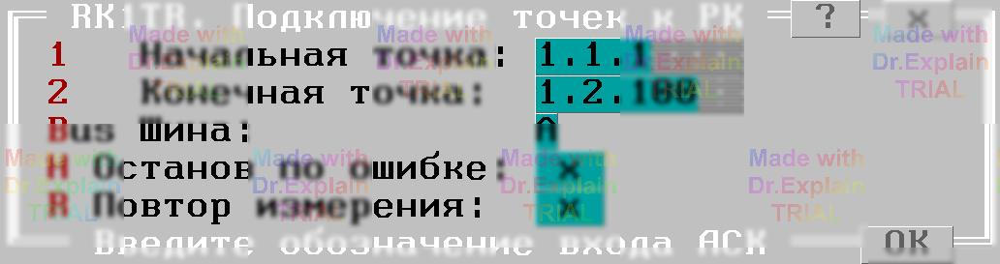

3.5 Подключение точек к шинам РК (RK1TR)
Тест позволяет проверять подключение точек к указанным шине коммутатора.
Утилита предоставляет меню, показанном на рисунке:

Опция "Начальная точка" задает адрес начала диапазона проверяемых входов АСК.
Опция "Конечная точка" задает адрес конца диапазона проверяемых входов АСК.
Опция "Шины" имеет две установки: "A" и "B", определяющие проверку подключения входов АСК к соответствующей шине.
Алгоритм проверки хорошо виден из протокола выполнения (пример получен в холостом режиме).
Подготовка к выполнению
$DEV Сброс всех точек со всех шин
$DEV АЦП: Реж=R дU=2В I=20мА Um=4В Ку=5 Вкл дR=100 Ом (110 Ом)
$DEV АЦП на: '+'/A1 '-'/B1
$DEV ПИТ: измерение д.быть Стаб=U Стаб=U
Для каждой точки выполняются следующие действия (в меню задана шина A)
$TST1 1.1.1 к шинам A1,B1 {begin
$DEV 1.1.1 на: A1,B1
$DEV ПИТ: измерение д.быть Стаб=I Стаб=I
$DEV 1.1.1 на: B1 (откл от A1)
$DEV ПИТ: измерение д.быть Стаб=U Стаб=U
$DEV 1.1.1 на: A1,B1
$DEV ПИТ: измерение д.быть Стаб=I Стаб=I
$DEV 1.1.1 на: A1 (откл от B1)
$DEV ПИТ: измерение д.быть Стаб=U Стаб=U
$DEV 1.1.1 на: A1,B1
$DEV ПИТ: измерение д.быть Стаб=I Стаб=I
$DEV 1.1.1 на: НетШин (откл от A1,B1)
$DEV ПИТ: измерение д.быть Стаб=U Стаб=U
$TST1 1.1.1 к шинам A1,B1 }end